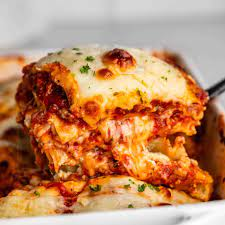

Lasagna
Home

Description
Lasagna is a classic Italian dish made by layering flat pasta sheets with a rich meat sauce, creamy béchamel (white sauce), and melted cheese. The hearty meat sauce is often made from ground beef or sausage cooked with onions, garlic, tomatoes, and Italian herbs like basil and oregano. Between the layers, you'll also find ricotta or cottage cheese, which adds a smooth and creamy texture to every bite.
Baked in the oven until bubbly and golden brown on top, lasagna is the ultimate comfort food. It's a perfect balance of savory flavors and satisfying textures, making it a popular dish for family dinners, gatherings, or special occasions. Whether served with a side of garlic bread or a fresh green salad, lasagna never fails to impress.
Ingredients
🥩 Meat Sauce
- 500g (1 lb) ground beef or Italian sausage
- 1 medium onion, chopped
- 2–3 cloves garlic, minced
- 1 can (400g/14 oz) crushed tomatoes
- 2 tablespoons tomato paste
- 1 teaspoon dried basil
- 1 teaspoon dried oregano
- Salt and black pepper to taste
- Olive oil (for sautéing)
🧀 Cheese Mixture
- 1 cup ricotta cheese (or cottage cheese)
- 1 egg
- ½ cup grated Parmesan cheese
- Salt and pepper to taste
🥛 Béchamel Sauce (optional but classic in some versions)
- 2 tablespoons butter
- 2 tablespoons all-purpose flour
- 2 cups milk
- A pinch of nutmeg
- Salt to taste
🥛 Béchamel Sauce (optional but classic in some versions)
- 1½ to 2 cups shredded mozzarella cheese
🍝 Pasta
- 9–12 lasagna noodles (regular or oven-ready)
Steps
- Prepare the Meat Sauce
- In a large skillet, heat some olive oil over medium heat.
- Add chopped onions and cook until soft (2–3 minutes).
- Add minced garlic and cook for 1 minute.
- Add ground beef or sausage, breaking it up with a spoon. Cook until browned and fully cooked.
- Stir in crushed tomatoes and tomato paste.
- Season with basil, oregano, salt, and pepper.
- Let it simmer for 15–20 minutes to thicken and develop flavor.
- Cook the Lasagna Noodles (if not using oven-ready)
- Boil a pot of water with salt.
- Cook noodles according to package instructions until al dente.
- Drain and lay them out flat on a plate or towel to avoid sticking.
- Mix the Cheese Filling
- In a bowl, combine ricotta cheese, egg, Parmesan cheese, salt, and pepper.
- Mix well and set aside.
- Make the Béchamel Sauce (Optional)
- Melt butter in a saucepan.
- Stir in flour and cook for 1–2 minutes (do not brown).
- Gradually whisk in milk until smooth.
- Simmer until thickened, then season with salt and a pinch of nutmeg.
- Assemble the Lasagna
- Preheat oven to 180°C (350°F).
- In a baking dish, spread a thin layer of meat sauce on the bottom.
- Add a layer of noodles.
- Spread some ricotta mixture, then meat sauce, then béchamel (if using), then sprinkle mozzarella.
- Repeat the layers (noodles → ricotta → sauces → mozzarella) until ingredients are used up.
- Finish with a generous layer of mozzarella and Parmesan on top.
- Bake
- Cover with foil (to prevent cheese from burning).
- Bake for 25 minutes.
- Remove foil and bake for an additional 15–20 minutes until golden and bubbly.
- Rest and Serve
- Let the lasagna rest for 10–15 minutes before cutting. This helps it hold its shape.
- Serve warm with a side salad or garlic bread!